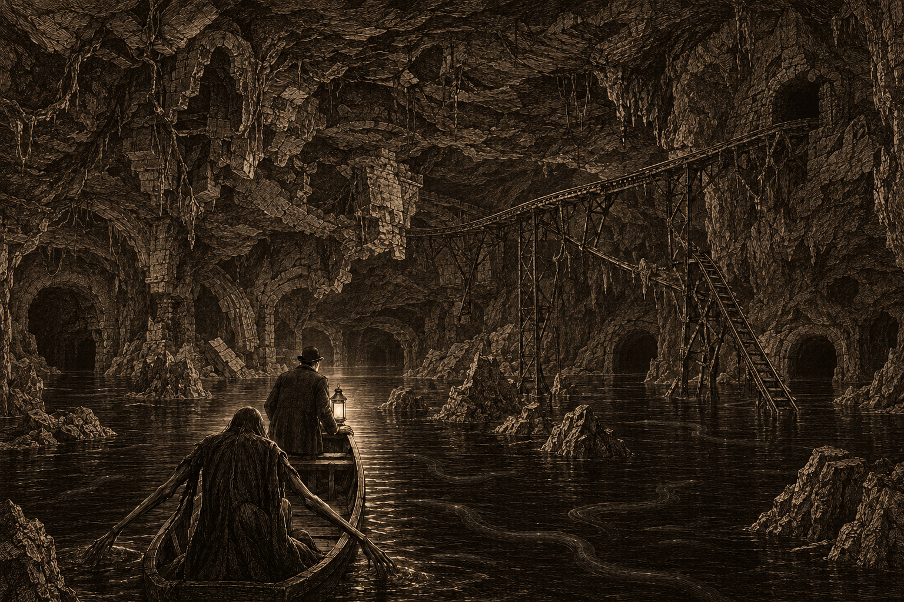
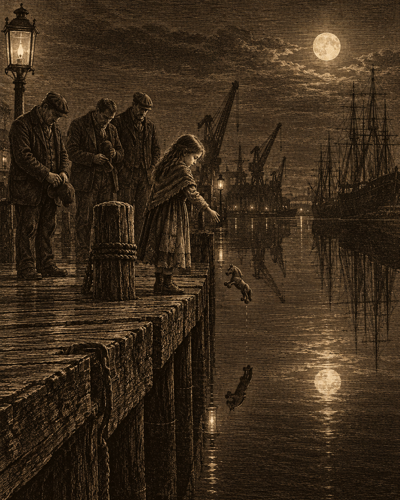

The great cavern beneath the city, and the old Fifth Line where it meets the water, as sketched afterward by your correspondent, who could not hold a pencil at the time.
I have spent the better part of my career asking after the old city, the one beneath the one we walk on, and the better part of it being told to stop. This week, for the price of a fare and a promise not to scream, I was shown it.
The instructions were not ones a sensible man would follow: wait alone at the old pier in Six Towers, after dark, with a lantern. I waited a long while. Then a hand appeared in the black mouth of a tunnel beneath the district, and beckoned. A correspondent goes where the story goes, so I stepped down into the canal.
My first impression of Lady Crane was not a favorable one. The hand came first, each finger as long as my whole hand, then a spindly arm, then the rest of her: nine feet of limb when she unfolds, like a heron that has learned to stand upright. She does not pole her boat so much as pull it, drawing herself along the tunnel walls hand over hand. I gripped the gunwale and said what prayers I could remember.
Then she spoke. “Hello, dearie. Mind your elbows.” For the rest of the night she was the warmest host I have met in thirty years of the trade.
To make conversation, I asked what it is the Gondoliers actually do. “Why, help you get around the city, dearie.” Is that all? She pulled us along a few more lengths before she answered. “We help you move along. And we help others move on.” I did not ask which others.
Some of the tunnels were barely wider than the boat, and I sat folded nearly double. I am not, I have discovered, a man who does well in small spaces. Her long arms reached past me, inches from my face, to haul us along by the ceiling, and at one point the brick pressed so close that a button sprang from my coat into the dark water. I did not ask her to go back for it.
Once we passed through a low chamber where every ledge and wall and old iron ring was caked thick with grey dust. Lady Crane’s manner changed at once. She slowed, and hushed, and her eyes never stopped moving. “Don’t touch anything, dearie,” she said quietly. “Don’t disturb it.” She did not smile again until we were well through.
Then the walls fell away. We came out into a cavern larger than any warehouse in Doskvol, the underside of the city hanging overhead: footings, foundations, old arches holding up streets I have walked a thousand times. I could not have said which streets.
Here, with nothing to pull on, Lady Crane spread her fingers wide and paddled with her hands like oars. I did not remark on it, nor on the dark shapes moving in the water, nor on the small ghost-lights at the edge of the lamp that were never there when I looked again. I was raised to be polite.
I did ask about the rails: a line of track coming out of a tunnel across the cavern, sloping down, and vanishing beneath the black water. “The Fifth Line,” she said. “What’s left of her.” Every child in Doskvol knows that name from the rhyme, and from then on I forgot to be frightened.
Does the train still run? “She crashed. Decades ago.” So it runs no longer? Lady Crane regarded me for a long moment. “I didn’t say that.”
Most of the old ways in were sealed long ago, she said, the Fifth Line’s platform among them. “But there’s plenty of ways below, if you know where to look, and you don’t mind unfavorable company.” I told her I found her company very favorable. Lady Crane gave me a warm smile, and I am quite sure a genuine one.
Could I send readers her way? She laughed. “You can try, dearie. But I choose my passengers.” Then she set me down at the old pier in Six Towers and slipped back into the canals beneath the city.
The dockers of Doskvol do not talk to the papers, unless the paper buys a round. Tam Fennick, forty years a docker, accepted the first glass on condition of the second, and the stories began.
“You don’t go out on the water without paying,” he said. “Rowing to the next pier, a bit of copper over the side. A long voyage, you pay proper before you cast off.” On Tithesday, the first of every month, everyone pays, and the old hands say the old words: “Coin drawn from the harbor’s own trade, counted true and paid in full, every season, without fail.” Paid to whom? “The sea.”
When a man is overdue, his family pays for him. On the north quay this week, a girl of six or seven dropped a wooden horse off the pier. Her father’s boat is three days late. Several of the men took off their caps.
The water, the dockers say, “gets weird.” Last week it went flat as glass for an hour, “like something underneath was holding its breath.” Something underneath? “The Thing Below,” offered a younger man. Mr. Fennick turned on him. “Don’t.” What is the Thing Below? “Don’t ask that.” The round, it seemed, was over.

The north quay. A father three days overdue.